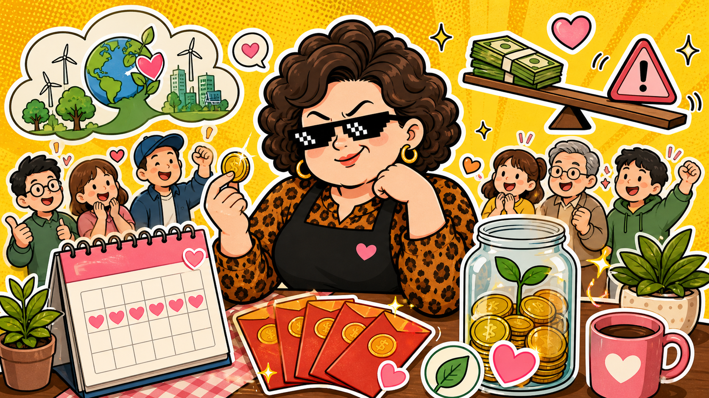

00878 國泰永續高股息 · 人氣 ETF
等領錢，也看淨值
00878 這類高股息 ETF 很會讓人有「每季有錢進來」的安全感，但阿姨會把配息、淨值、成分股一起攤開看。
上圖為 AI 生成情境圖，不是新聞照片，也不是投資建議。
資料整理：2026/05/25
阿姨白話：配息像冷氣房，很舒服。但如果外面其實在下大雨，不能因為吹冷氣就忘記窗戶還開著。
經濟日報近期報導，00878 配息話題再度引發投資人討論，甚至有長期領息案例被拿出來分享。這種新聞很會打中大家的心：誰不想在家領錢？但故事越好聽，越要把條件講清楚。
00878 主打永續與高股息，但 ETF 不是魔法錢包。成分股會調整，市場會波動，配息政策也會隨基金狀況改變。你看到的是現金流，背後還有淨值變化、資本利得或收益來源這些細節。
阿姨看點
- 人氣高不等於一定適合自己，先看你要現金流、成長，還是分散。
- 配息很重要，但淨值長期有沒有守住也同樣重要。
- 永續、高股息、季配息都是標籤，真正要看的是成分股與整體報酬。
⚠️ 阿姨的風險提醒（你一定要看）
📌 本站所有股票 ETF 內容僅供教育與資訊參考，不是投資建議，不保證任何收益。
📌 所有數字與範例皆為靜態展示資料，未串接即時市場數據，請勿以此做為買賣依據。
📌 任何投資都有風險，包括本金損失的可能。投資前請自行做功課、評估財務狀況，必要時諮詢專業顧問。
📌 阿姨碎念歸碎念，賺錢賠錢都是你自己的事。阿姨不幫你決定，只幫你補習。